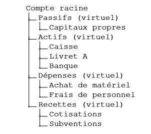

|
Treasurer
Cash management for your project
|
L'application doit permettre de gérer différents comptes, hiérarchisés en plusieurs catégories :
Ces comptes sont dits « virtuels» et découlent d’un seul compte : le compte racine. Les comptes réels dérivent de ces comptes virtuels.
Ces comptes peuvent faire l'objet de transactions.
Les transactions représentent un échange de valeur entre des comptes. Si cette transaction concerne 2 comptes, on parle de transaction simple. Si la transaction concerne plus de 2 comptes, on parle de transaction répartie. Chaque transaction possède les attributs suivants :
Les transactions doivent respectés les règles suivantes :
A la création de l'association sur notre application, des transactions devront être effectuée. Le solde initial d'un compte d'actif est créé à l'aide d'une transaction débitant le nouveau compte et créditant un compte de capitaux propres. Le solde initial d'un compte de passif est créé à l'aide d'une transaction créditant le nouveau compte et débitant un compte de capitaux propres.
Le rapprochement consiste à figer des transactions passées en s'assurant de leur validité. Pour se faire, on compare le solde présent dans l'application et le solde réel. Si les deux soldes concordent, on marque les transactions effectuées comme étant « rapprochés ». Sinon, il faut laisser à l'utilisateur la possibilité de corriger les transactions.
La clôture du livre consiste en la remise à zéro des comptes de recettes et de dépenses. Pour se faire, 3 transactions sont nécessaires :
Plusieurs rapports devront pouvoir être générés :
Les informations utilisées par l'application devront être persistantes : il est nécessaire de les sauvegarder ! Pour ce faire, l'utilisation d'une base de données semble être la solution la plus simple.
Le contexte de l'application doit également être sauvegardé. Par exemple, si l'utilisateur ferme l'application sur une page spécifique, c'est sur cette page que devra s'ouvrir l'application lors de la future utilisation. On peut également imaginer sauvegarder des préférences linguistiques, de devise utilisée etc.
Lucas Bendyna
© L&M&C&B&S
Généré par
1.8.18